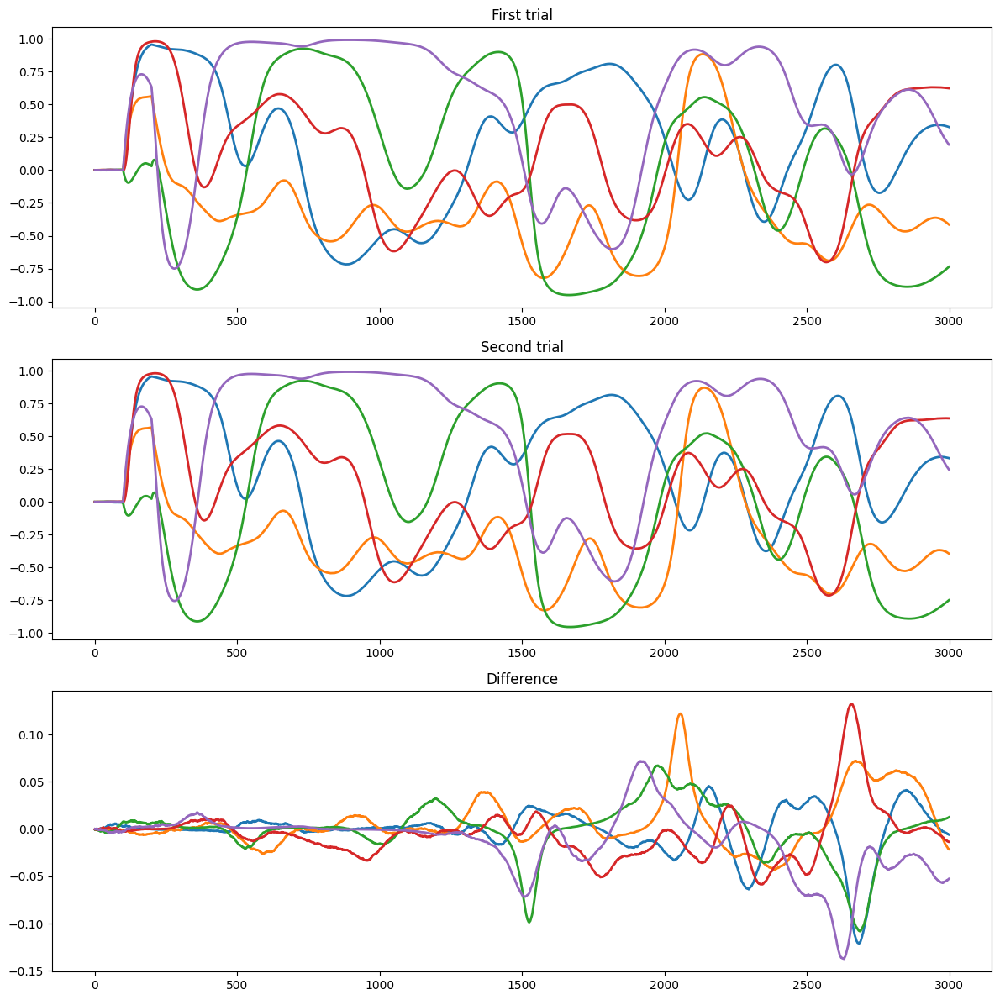
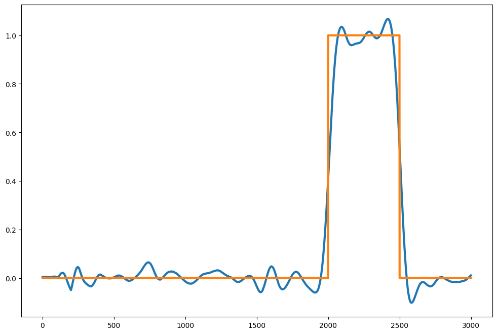

#!pip install ANNarchyEcho state networks


If you run this notebook in colab, first uncomment and run this cell to install ANNarchy:
This notebook demonstrates how to implement a simple Echo state network (ESN) with ANNarchy. It is a simple rate-coded network, with a population of recurrently-connected neurons and a readout layer which will be learned offline using scikit-learn. The task will be a simple univariate regression.

Let’s start by importing ANNarchy.
The clear() command is necessary in notebooks when recreating a network. If you re-run the cells creating a network without calling clear() first, populations will add up, and the results may not be what you expect.
setup() sets various parameters, such as the step size dt in milliseconds. By default, dt is 1.0, so the call is not necessary here.
import numpy as np
import matplotlib.pyplot as plt
import ANNarchy as ann
ann.clear()
ann.setup(dt=1.0)ANNarchy 4.8 (4.8.0) on darwin (posix).Each neuron in the reservoir follows the following equations:
\tau \frac{dx(t)}{dt} + x(t) = \sum_\text{input} W^\text{IN} \, r^\text{IN}(t) + g \, \sum_\text{rec} W^\text{REC} \, r(t) + \xi(t)
r(t) = \tanh(x(t))
where \xi(t) is a uniform noise.
The neuron has three parameters and two variables:
ESN_Neuron = ann.Neuron(
parameters = """
tau = 30.0 : population
g = 1.0 : population
noise = 0.01
""",
equations="""
tau * dx/dt + x = sum(in) + g * sum(exc) + noise * Uniform(-1, 1)
r = tanh(x)
"""
)The echo-state network will be a population of 400 neuron.
N = 400
pop = ann.Population(N, ESN_Neuron)We can specify the value of the parameters from Python, this will override the value defined in the neuron description. We can give single float values or numpy arrays of the correct shape:
pop.tau = 30.0
pop.g = 1.4
pop.noise = 0.01The input to the reservoir is a single value, we create a special population InputArray that does nothing except storing a variable called r that can be set externally.
inp = ann.InputArray(1)
inp.r = 0.0Input weights are uniformly distributed between -1 and 1.
Wi = ann.Projection(inp, pop, 'in')
Wi.connect_all_to_all(weights=ann.Uniform(-1.0, 1.0))<ANNarchy.core.Projection.Projection at 0x1453a2f00>Recurrent weights are sampled from the normal distribution with mean 0 and variance g^2 / N. Here, we put the synaptic scaling g inside the neuron.
Wrec = ann.Projection(pop, pop, 'exc')
Wrec.connect_all_to_all(weights=ann.Normal(0., 1/np.sqrt(N)))<ANNarchy.core.Projection.Projection at 0x1453a28d0>ann.compile()We create a monitor to record the evolution of the firing rates in the reservoir during the simulation.
m = ann.Monitor(pop, 'r')
n = ann.Monitor(inp, 'r')A single trial lasts 3 second by default, with a step input between 100 and 200 ms. We define the trial in a method, so we can run it multiple times.
def trial(T=3000.):
"Runs two trials for a given spectral radius."
# Reset firing rates
inp.r = 0.0
pop.x = 0.0
pop.r = 0.0
# Run the trial
ann.simulate(100.)
inp.r = 1.0
ann.simulate(100.0) # initial stimulation
inp.r = 0.0
ann.simulate(T - 200.)
return m.get('r')We run two trials successively to look at the chaoticity depending on g.
pop.g = 1.5
data1 = trial()
data2 = trial()plt.figure(figsize=(12, 12))
plt.subplot(311)
plt.title("First trial")
for i in range(5):
plt.plot(data1[:, i], lw=2)
plt.subplot(312)
plt.title("Second trial")
for i in range(5):
plt.plot(data2[:, i], lw=2)
plt.subplot(313)
plt.title("Difference")
for i in range(5):
plt.plot(data1[:, i] - data2[:, i], lw=2)
plt.tight_layout()
plt.show()
We can now train the readout neurons to reproduce a step signal after 2 seconds.
For simplicity, we just train a L1-regularized linear regression (LASSO) on the reservoir activity using scikit-learn.
target = np.zeros(3000)
target[2000:2500] = 1.0from sklearn import linear_model
reg = linear_model.Lasso(alpha=0.001, max_iter=10000)
reg.fit(data1, target)
pred = reg.predict(data2)plt.figure(figsize=(12, 8))
plt.plot(pred, lw=3)
plt.plot(target, lw=3)
plt.show()